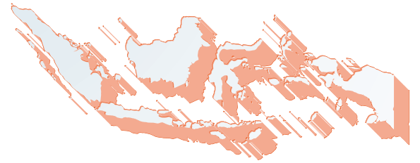

468,013M
Dana Tersalurkan
Merupakan total jumlah dana tahun 2025 yang disalurkan ke program ini

Berikut Laporan Donasi yang anda titipkan kepada Rumah Zakat Selama Tahun 2025.
Dari Indonesia Hingga Penjuru Dunia
Merupakan total jumlah dana tahun 2025 yang disalurkan ke program ini
Jumlah total penerima manfaat dari layanan manfaat seperti ambulan, dll
Jumlah total penerima bantuan atau manfaat dari berbagai asnaf
Jumlah desa binaan dimana program pemberdayaan berbasis wilayah dilaksanakan